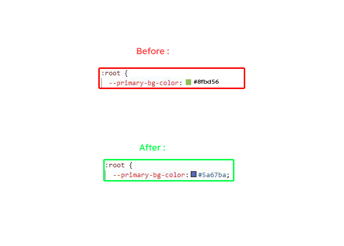
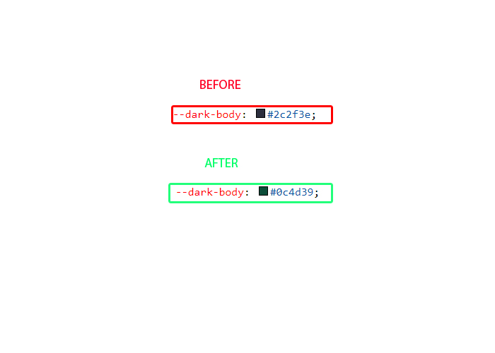
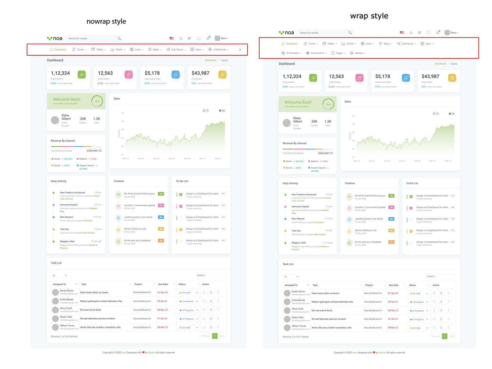

Noa - Django Bootstrap 5 Admin & Dashboard Template
Dashboard
Welcome to Noa – Django Bootstrap 5 Admin & Dashboard Template- Created Date: 12/05/2022
- Author: Spruko
- Company: Spruko Technologies Private Limited
- Support: support@spruko.com
Thank you for purchasing our admin template. Feel free to contact us any time. We have a dedicated team to provide you best support. If you have any queries please reach us through live chat or email : sprukotechnologies@gmail.com
If You Love Our Template Design please don't forget to rate it, Thank you.
Introduction
Noa - Django Bootstrap 5 Admin & Dashboard Template, with Noa template format, it's very easy to create a presence and grab someone's attention around the web page Because the template is built using HTML5, CSS3, Bootstrap 5 framework and with Sass. So please before you start working with the template take a quick look on the documentation so that you can easily built your website.
Template Description
Noa is a Django Bootstrap Admin & Dashboard Template comes with modern and minimal design. It is fully responsive, flexible, and user-friendly. noa admin template is powered with HTML 5, SASS, & Bootstrap 5 which looks great on Desktops, Tablets, and Mobile Devices. This Template Includes 120+ HTML Pages, 50+ Plugins and more UI elements. User no need to do hard work for this template customization. We already designed it and you can easily design your website just how you like it. Advanced Form-Elements like Date pickers, form elements are included. Noa admin template comes with 100% premium quality design. Noa template designed by using HTML5, CSS3, Jquery, After Purchasing Noa template you will get HTML, CSS, Scss and JS files.
Noa has very clean flat user interface admin Backend design, easy customizable components and widgets.The Template comes with an awesome unique design also we ensure you can easily design admin template.
Noa comes with fully responsive layouts for all type of devices. Works on all major web browsers, Desktop, iPhone, iPad, Tablet and all other smart phone devices
Once you Purchase Noa, you will be able to get all the future updates for free.
Template Features
| Vertical-menu | Horizontal click menu | Horizontal hover menu | RTL ready |
| 120+ HTML Pages | Bootstrap 5 Responsive Framework | Well Commented Code | 24 * 7 Professional Company Support |
| Regular Updates | 50+ Plugins | 5 types of Charts | Select2 |
| About us | Blog | File Manager | Gallery |
| Project Pages | Ecommerce Pages | Settings Page | Blog Details |
| Calendar | Mail Inbox | 10 Types of Icon sets | File upload |
| Message Chat | Tickets | Month & Date & Year Range Pickers | FormAdvanced Elements |
| Data Tables | Lockscreen Page | Error Page | User Profile |
| Task Pages | Invoice Page | Advanced Pricing Tables | Easy to customize |
| More Widgets | Very Easy to Create your Own Site | Neat, clean and simple design | W3C Validated |
Minimum Requirements
- asgiref==3.5.0
- beautifulsoup4==4.10.0
- Django==4.0.2
- pip==22.0.3
- django-htmlmin==0.11.0
- html5lib==1.1
Installation Process of Python
In order to run Django you need to install Python by the following steps
This steps are based on Windows OS
Step1: Please visite the Official Web Site of the Python python.org
Step2: Click on the Download Python button
Step3: Now your Python setup file has downloaded
Step4: Now Right click on the Python setup file and select Run as administrator click on Yes
Step5: Please click on the Check Box Add Python to PATH. And select Customize installation option
Step6: Click on Install for all users. And click on the Install button to install python on your system
Step7: To check whether Python is installed or not type python --version in your terminal or console
Step8: The pip package is automatically installed with your python installation
Step9: To check whether pip package is installed or not type pip --version in your terminal or console
NOTE: Please follow the official web site python.org to install on Linux/UNIX OS.
SET-UP DJANGO PROJECT
- Assuming that you have already installed python in your computer.
- First, you need to create an environment at your project location. where, you want to create your project in your computer globally or locally by setting your project path in the terminal.
- To create Virtualenv type
python -m venv envin your terminal or console - Now you need to activate your Virtualenv by typing
env\scripts\activate - You must activate your Virtualenv to download any new dependencies "locally", otherwise those dependencies will install "globally"
INSTALLATION PROCESS OF Django
Here we are using "Python Manager" to download "Django"
If you know how to create Django project you can skip this step.
- First open command prompt in my case Example:
C:\Users\ADMIN01>and typepip install djangoto install Django globally. - To check whether Django is installed or not type
python -m django --versionin your terminal or console - Now open a new command prompt and navigate to the folder where you want to create the Django project.
- In my case Example:
C:\Users\ADMIN01\Desktop\django>. - Now type the following command line
django-admin startproject projectnameand hit enter to create Django project. Here projectname is nothing but your django project folder name that you want to keep as your project name - Now you are sucessfully created Django project.
- To create App or Application navigate to your django project folder Example:
C:\Users\ADMIN01\Desktop\django\projectname>in your command prompt and typepython manage.py startapp appname - Now you are sucessfully created App in your django project.
- The project that you received will have a file called the requirements.txt file. Now go to that file location and then in your terminal type
pip install -r requirements.txt - The above command will download all the required packages by using the requirements.txt file.
- We have an improtant dependency or module called django-htmlmin it is used to minify the html content. You have already installed HTML_MINIFY with the help of requirements.txt file
- By default we are disabling HTML_MINIFY module i.e., HTML_MINIFY= False if you want to enable HTML_MINIFY module please follow the root path Noa/settings.py in that file you will find HTML_MINIFY= False then change it into HTML_MINIFY= True
NOTE: If you have any further queries in installation please refer to the official website HERE
After installation run following command to get Django development server
python manage.py runserverThe Basic Structure Of Django Project
├── app/
| ├── __pycache__/
| ├── migrations/
| ├── templates/
| | ├── components/
| | | ├── layouts/
| | | | └── landing/
| | | ├── base.html
| | | ├── custom-base.html
| | | └── switcher-base.html
| | └── 120+ HTML files
├── noa/
├── static/
| └── assets/
├── db.sqlite3
├── gulpfile.js
├── manage.py
├── package.json
└── package-lock.json
- First, unzip the project folder that you received from us.
- Navigate as shown Example: F:\project folder\app\templates in that template folder will have 120+ html pages
- Navigate as shown Example: F:\project folder\app\templates\ Open components folder there you will find base.html, custom-base.html and switcher-base.html files
- Here base.html file is the base file for all the html pages
- Here custom-base.html file is the base file for all custom pages ex: login.html, register.html, etc..,
- And switcher-base.html file is the base file for switcherpage.html page
- NOTE : By default switcher is enabled in your template, so the custom styles will not work i.e., RTL, horizontal, hover and etc..,. So if you want to enable those styles, first you need to remove or disable switcher in your template as shown in switcher section in documentation.
- Please refer FAQ'S to activate other versions and styles like RTL, horizontal, horizontal-hover, Dark-mode, Boxed-Layout, Sidemenu-Icon. etc..,
SCSS & CSS
- Gulp
Gulp is a JavaScipt streaming task runner. It automate many development tasks. Using gulp you can perform tasks like running a local server, minifying code, compilation, Browser sync, optimizing images, etc... We are using gulp which allows to easily compilation of scss to css. You can read it more about it here.
Prerequisites
Please follow below steps to install and setup all prerequisites:
- Nodejs
Make sure to have the Node.js installed & running in your computer. If you have already installed nodejs on your computer, you can skip this step, otherwise install nodejs on your computer,
- Gulp
Make sure to have the Gulp installed & running in your computer. If you have already installed gulp on your computer, you can skip this step. In order to install, just run command
npm install -g gulpfrom your terminal. - Gulp Variables
After Completion of gulp Install. open
gulpfile.jsAnd install the "Declaration of gulp variables" in your command promt. In order to install, just run commandnpm install gulp,const sass = require('gulp-sass')(require('sass'));,
npm install gulp-postcss,npm install autoprefixer,npm install gulp-sourcemaps,
npm install browser-syncfrom your terminal.Make sure to have all above prerequisites installed & running in your computer. If you want to install more variables for your template, just declare the variables in
gulpfile.jsafter that run in command promt
Installation
To setup, follow below mentioned steps:
- Install Prerequisites
Make sure to have all above prerequisites installed & running in your computer
- Install Dependencies
Open your terminal, go to your folder and enter the command
npm install. This would install all required dependencies innode_modulesfolder.
After you finished with above steps, you can run the command to compile scss files into css:
gulp
SCSS & CSS
Here we provided package.json and gulpfile.js files in your project, you just need to run npm install in your terminal in your project root path.
After compilation of download, you can compile your SCSS files into CSS files by following below procedure.
| Command | Description |
|---|---|
gulp
|
Runs the project locally, starts the development server and watches for any changes in your sass files and folders etc. The development server is accessible at http://localhost:8000. |
gulp watch
|
In Noa template gulp watch command is used for, whatever the changes made in scss files, will watch and compiled into css files.
|
gulp skins
|
In this template gulp skins command is for what ever changes are made in skin-modes.scss file will be compiled and the changes will update in skin-modes.css file in css folder.
|
Software Versions Used:
- python : 3.10.2
- Django : 4.0.4
- pip : 22.0.4
- asgiref : 3.5.0
- beautifulsoup4 : 4.10.0
- django-htmlmin : 0.11.0
- html5lib : 1.1
- six : 1.16.0
- soupsieve : 2.3.1
- sqlparse : 0.4.2
- tzdata : 2021.5
- webencodings : 0.5.1
Over All Folder Structure
├── app/
| ├── __pycache__/
| ├── migrations/
| ├── templates/
| | ├── components/
| | | ├── layouts/
| | | | ├── landing/
| | | | | ├── app-header.html
| | | | | ├── app-sidebar.html
| | | | | ├── footer.html
| | | | | ├── header-main.html
| | | | | ├── scripts.html
| | | | | ├── styles.html
| | | | | └── switcher.html
| | | | ├── app-header.html
| | | | ├── app-sidebar.html
| | | | ├── custom-scripts.html
| | | | ├── custom-styles.html
| | | | ├── custom-switcher.html
| | | | ├── footer.html
| | | | ├── modal.html
| | | | ├── scripts.html
| | | | ├── styles.html
| | | | └── switcher.html
| | | ├── base.html
| | | ├── custom-base.html
| | | ├── landing-base.html
| | | └── switcher-base.html
| | └── 120+ HTML files
| ├── __init__.py
| ├── admin.py
| ├── apps.py
| ├── models.py
| ├── tests.py
| ├── urls.py
| └── views.py
├── noa/
| ├── __pycache__
| ├── __init__.py
| ├── asgi.py
| ├── settings.py
| ├── urls.py
| └── wsgi.py
├── static/
| └── assets/
├── db.sqlite3
├── gulpfile
├── manage.py
├── package.json
└── package-lock.json
Switcher
By default the switcher is enabled in your template, if you want to remove switcher from your template please follow the process.
Go to root path: app/templates/components/ open "base.html" in that file, below the body tag remove the Swithcer link as shown below.
BEFORE :
AFTER :
Go to root path: app/templates/components/layouts/ open "styles.html" file and remove switcher css links given below.
REMOVE SWITCHER CSS LINK :
Go to root path: app/templates/components/layouts/ open "scripts.html" file and remove switcher js link given below.
STEP 1 :REMOVE SWITCHER.JS LINK
STEP 2 :CHANGE CUSTOM1.JS LINK TO CUSTOM.JS LINK
BEFORE :
AFTER :
NOTE : Here custom1.js file is used only when you are using switcher in your template.
Go to root path: app/templates/components/layouts/ open "app-header.html" file and at the bottom of that page remove the switcher-icon given below.
REMOVE SWITCHER-ICON CODE :
After completion of this process perform python manage.py runserver in your terminal.
NOTE: If you remove switcher styles and scripts in your template, then switcherpage.html page present in templates folder root path: app/templates/ will not work properly. If you want to use switcherpage.html then go to root path: app/templates/ open switcherpage.html then uncomment the styles and scripts which are commented.(Skip this process if this is not your requirement).
Uncomment the styles and scripts which are commented in switcherpage.html.
UNCOMMENT STYLES :
UNCOMMENT SCRIPTS :
NOTE: After completing this process please perform python manage.py runserver command
How to change colors of any chart according to the primary color of the template?
This process is only for change colors of a new chart according to the theme color.
How to change colors of any chart according to the primary color of the template?
- Assume that you want to add a new chart in empty.html page.
- Then create a js file Ex: in my case empty.js file. Then create a function and an id for that chart, and place the chart data inside of that function, in the empty.js file .
- If you are using more than one chart in empty.html page, then, create a new function() and with a new id (here id is nothing but a name that you used for your particular chart. function() name and ID name must be unique for every chart).
- Here i created a new function with name
(myChart())and gave it an id i.e.,chartIdfor my chart in empty.html page
EXAMPLE FOR CHART 1 :
EXAMPLE FOR CHART 2 :
How to apply colors to the new chart?
Open themeColors.js (root path: static/assets/js/themeColors.js) and add your chart id and function inside of the function names() function of (// chart colors) section as shown below.
- Here (#chartId1) is nothing but the id that you've used for your particular chart.
- Here myChart1(); is nothing but a function that you've used for your particular chart.
- Add( myVarVal ) variable in your chart js data, where you want to change the colors of your chart according to the primary color of the template.
- NOTE: For more understanding please refer below code which we used in index1.js file present in root
path: "static/assets/js/index.js". Here index1.js file is used for index.html page - Here myVarVal variable is used as primaryColor of the template, if you use this variable anywhere in the template then the color of that particular place will change according to theme color
color: [ myVarVal]
FAQ'S
NOTE: By default the switcher is enabled in your template, if you want to use any of the features specified in FAQ'S, then you must remove Switcher from your template i.e., The two styles or features will not work at a time.
1) How to Change Font Style ?
Step 1:
Go To _fonts.scss (static/assets/scss/custom/fonts/_fonts.scss )
if you want to change another font-family Go to the site Google Fonts And Slect One font Family and import In to style.css file
How to Select font Family
Example:

Step 2:
And paste Your Selected font-family in _fonts.scss
Example:
@import url("https://fonts.googleapis.com/css?family=Roboto:300,400,500,700,900");
Step 3:
And add the Your Selected font-family in _bootstrap-styles.scss(static/assets/scss/bootstrap/_bootstrap-styles.scss)
Example:
body {
margin: 0;
font-family: "Roboto", sans-serif;
font-size: 0.8375rem;
font-weight: 400;
line-height: 1.5;
color: $default-color;
text-align: left;
background-color: $background;
}
2) How to Change Sidemenu and Header icon?
NOTE :Sidemenu & Header Icons used in Noa are fromhttps://iconscout.com/unicons (Thin Line Icons).
Changing Sidemenu Icon :
You can change sidemenu icon by replacing svg code of selected icon with svg code of required icon and add class="side-menu__icon" for that svg icon
Changing Header Icon :
You can change Header icon by simply replacing svg code of selected icon with svg code of required icon.
3) How to Change Primary Color ?
Step 1:
Go To _bootstrap-styles.scss (static/assets/scss/bootstrap/_bootstrap-styles.scss )
You will find --primary-bg-color: #8FBD56; , where you can simply change color code to change primary color
How to Change Primary Color
Example:

Simply you can also change color for primary-bg-hover:#5cd3b9; & --primary-bg-border:#38cab3; , where you can simply change color code to change them
4) How to Change Logo ?
Go To "assets/images/brand" folder and replace your logo with Previous Logos within in image size. note: Please don't increase logo sizes. Replace your logo within given image size. otherwise the logo will not fit in particular place it disturbs the template design.
5) How to Enable RTL version?
Changing to RTL version
open custom.js path:(static/assets/js/custom.js) file go to RTL Style. and remove comments for $('body').addClass('rtl'); to enable RTL version as shown in below
// $('body').addClass('rtl');
$('body').addClass('rtl') as shown below
$('body').addClass('rtl');
6) How to Enable Darktheme?
open custom.js path:(static/assets/js/custom.js) file go to Dark Theme Style and remove comments for $('body').addClass('dark-mode'); to enable dark-mode style as shown in below
// DARK THEME START
// $('body').addClass('dark-mode');
// DARK THEME END
dark-mode as shown below
// DARK THEME START
$('body').addClass('dark-mode');
// DARK THEME END
7) How to change Dark Background color?
Step 1:
Go To _bootstrap-styles.scss (static/assets/scss/bootstrap/_bootstrap-styles.scss )
You will find --dark-body: #2c2f3e; , where you can simply change color code to change dark background color
How to change Dark Background Color
Example:

8) How to Enable Background image?
open custom.js path:(static/assets/js/custom.js) file go to Background Image Styles and remove comments for bg-img1 & dark-mode to enablebackground image style as shown in below
// Bg-Image1 Style Start
// $('body').addClass('bg-img1');
// $('body').addClass('dark-mode');
// ! Bg-Image1 Style End
bg-img1 & transparent-theme as shown below
// Bg-Image1 Style Start
$('body').addClass('bg-img1');
$('body').addClass('dark-mode');
// ! Bg-Image1 Style End
NOTE:Similarly you can apply bg-img2,bg-img3,bg-img4
NOTE:We can't use menu styles and header styles in Background Image
Go To "assets/img/media" folder and replace your image with Previous image(bg-img1) within image size. note: Please don't increase image size. Replace your image within given image size. otherwise the image will not fit in particular place it disturbs the template design.
9) How to Enable Color-header?
open custom.js path:(static/assets/js/custom.js) file go to Header Styles. and remove comments for color-header to enable color-header style as shown in below
// COLOR HEADER START
// $('body').addClass('color-header');
// COLOR HEADER END
color-header as shown below
// COLOR HEADER START
$('body').addClass('color-header');
// COLOR HEADER END
10) How to Enable Dark-header?
open custom.js path:(static/assets/js/custom.js) file go to Header Styles. and remove comments for dark-header to enable dark-header style as shown in below
// DARK HEADER START
// $('body').addClass('dark-header');
// DARK HEADER END
dark-header as shown below
// DARK HEADER START
$('body').addClass('dark-header');
// DARK HEADER END
11) How to Enable Light-header?
open custom.js path:(static/assets/js/custom.js) file go to Header Styles. and remove comments for header-light to enable light-header style as shown in below
// LIGHT HEADER START
// $('body').addClass('header-light');
// LIGHT HEADER END
light-header as shown below
// LIGHT HEADER START
$('body').addClass('header-light');
// LIGHT HEADER END
12) How to Enable Gradient-header?
open custom.js path:(static/assets/js/custom.js) file go to Header Styles. and remove comments for gradient-header to enable gradient-header style as shown in below
// GRADIENT HEADER START
// $('body').addClass('gradient-header');
// GRADIENT HEADER END
gradient-header as shown below
// GRADIENT HEADER START
$('body').addClass('gradient-header');
// GRADIENT HEADER END
13) How to Enable Light Menu?
open custom.js path:(static/assets/js/custom.js) file go to Menu Styles. and remove comments for light-menu to enable light-menu style as shown in below
// LIGHT LEFTMENU START
// $('body').addClass('light-menu');
// LIGHT LEFTMENU END
light-menu as shown below
// LIGHT LEFTMENU START
$('body').addClass('light-menu');
// LIGHT LEFTMENU END
14) How to Enable Color Menu?
open custom.js path:(static/assets/js/custom.js) file go to Menu Styles. and remove comments for color-menu to enable color-menu style as shown in below
// COLOR LEFTMENU START
// $('body').addClass('color-menu');
// COLOR LEFTMENU END
color-menu as shown below
// COLOR LEFTMENU START
$('body').addClass('color-menu');
// COLOR LEFTMENU END
15) How to Enable Dark Menu?
open custom.js path:(static/assets/js/custom.js)file go to Menu Styles. and remove comments for dark-menu to enable dark-menu style as shown in below
// DARK LEFTMENU START
// $('body').addClass('dark-menu');
// DARK LEFTMENU END
dark-menu as shown below
// DARK LEFTMENU START
$('body').addClass('dark-menu');
// DARK LEFTMENU END
16) How to Enable Gradient Menu?
open custom.js path:(static/assets/js/custom.js)file go to Menu Styles. and remove comments for gradient-menu to enable gradient-menu style as shown in below
// GRADIENT LEFTMENU START
// $('body').addClass('gradient-menu');
// GRADIENT LEFTMENU END
gradient-menu as shown below
// GRADIENT LEFTMENU START
$('body').addClass('gradient-menu');
// GRADIENT LEFTMENU END
17) How to Enable Boxed-Layout?
open custom.js path:(static/assets/js/custom.js)file go to Layout Styles. and remove comments for layout-boxed to enable layout-boxed style as shown in below
// BOXED LAYOUT START
// $('body').addClass('layout-boxed');
// BOXED LAYOUT END
layout-boxed as shown below
// BOXED LAYOUT START
$('body').addClass('layout-boxed');
// BOXED LAYOUT END
18) How to Enable Scrollable-Layout?
open custom.js path:(static/assets/js/custom.js) file go to HEADER POSITION STYLES START. and remove comments for scrollable-layout to enable scrollable-layout style as shown in below
// HEADER POSITION STYLES START
// $('body').addClass('scrollable-layout');
// HEADER POSITION STYLES END
scrollable-layout as shown below
// HEADER POSITION STYLES START
$('body').addClass('scrollable-layout');
// HEADER POSITION STYLES END
19) How to Enable Sidemenu-Icon-with Text?
open custom.js path:(static/assets/js/custom.js) file and remove comments for ICONTEXT SIDEMENU START to enable sidemenu-icontext style as shown in below
// ICONTEXT SIDEMENU START
// $('body').addClass('icontext-menu');
// $('body').addClass('sidenav-toggled');
// if((document.querySelector('body').classList.contains('login-img')) ){
// return;
// }
// else if((document.querySelector('body').classList.contains('error-bg'))){
// return;
// }
// else{
// icontext();
// }
// ICONTEXT SIDEMENU END
sidemenu-icontext as shown below
// ICONTEXT SIDEMENU START
$('body').addClass('icontext-menu');
$('body').addClass('sidenav-toggled');
if((document.querySelector('body').classList.contains('login-img')) ){
return;
}
else if((document.querySelector('body').classList.contains('error-bg'))){
return;
}
else{
icontext();
}
// ICONTEXT SIDEMENU END
20) How to Enable Closed-Menu?
open custom.js path:(static/assets/js/custom.js) file and remove comments for CLOSED SIDEMENU START to enable closed menu style as shown in below
// CLOSED SIDEMENU START
// $('body').addClass('closed-leftmenu');
// $('body').addClass('sidenav-toggled');
// CLOSED SIDEMENU END
Closed Sidemenu as shown below
// CLOSED SIDEMENU START
$('body').addClass('closed-leftmenu');
$('body').addClass('sidenav-toggled');
// CLOSED SIDEMENU END
21) How to Enable Icon Overlay
open custom.js path:(static/assets/js/custom.js) file and remove comments for ICON OVERLAY SIDEMENU START to enable Icon Overlay style as shown in below
// ICON OVERLAY SIDEMENU START
// $('body').addClass('icon-overlay');
// $('body').addClass('sidenav-toggled');
// if((document.querySelector('body').classList.contains('login-img')) ){
// return;
// }
// else if((document.querySelector('body').classList.contains('error-bg'))){
// return;
// }
// else{
// hovermenu();
// }
// ICON OVERLAY SIDEMENU END
sideicon-menu as shown below
// ICON OVERLAY SIDEMENU START
$('body').addClass('icon-overlay');
$('body').addClass('sidenav-toggled');
if((document.querySelector('body').classList.contains('login-img')) ){
return;
}
else if((document.querySelector('body').classList.contains('error-bg'))){
return;
}
else{
hovermenu();
}
// ICON OVERLAY SIDEMENU END
22) How to Enable Hover Submenu
open custom.js path:(static/assets/js/custom.js) file and remove comments for HOVER SUBMENU START to enable Hover submenu style as shown in below
// HOVER SUBMENU START
// $('body').addClass('hover-submenu');
// $('body').addClass('sidenav-toggled');
// if((document.querySelector('body').classList.contains('login-img')) ){
// return;
// }
// else if((document.querySelector('body').classList.contains('error-bg'))){
// return;
// }
// else{
// hovermenu();
// }
// HOVER SUBMENU END
Hover Submenu as shown below
// HOVER SUBMENU START
$('body').addClass('hover-submenu');
$('body').addClass('sidenav-toggled');
if((document.querySelector('body').classList.contains('login-img')) ){
return;
}
else if((document.querySelector('body').classList.contains('error-bg'))){
return;
}
else{
hovermenu();
}
// HOVER SUBMENU END
23) How to Enable Hover Submenu style1
open custom.js path:(static/assets/js/custom.js) file and remove comments for HOVER SUBMENU STYLE-1 START to enable Hover submenu style1 style as shown in below
// HOVER SUBMENU STYLE-1 START
// $('body').addClass('hover-submenu1');
// $('body').addClass('sidenav-toggled');
// if((document.querySelector('body').classList.contains('login-img')) ){
// return;
// }
// else if((document.querySelector('body').classList.contains('error-bg'))){
// return;
// }
// else{
// hovermenu();
// }
// HOVER SUBMENU STYLE-1 END
Hover Submenu Style1 as shown below
// HOVER SUBMENU STYLE-1 START
$('body').addClass('hover-submenu1');
$('body').addClass('sidenav-toggled');
if((document.querySelector('body').classList.contains('login-img')) ){
return;
}
else if((document.querySelector('body').classList.contains('error-bg'))){
return;
}
else{
hovermenu();
}
// HOVER SUBMENU STYLE-1 END
24) How to Enable Horizontal layout
open custom.js path:(static/assets/js/custom.js) file and remove comments for horizontal to enable Horizontal layout style as shown in below
// $('body').addClass('horizontal');
Horizontal layout as shown below
$('body').addClass('horizontal');
25) How to Enable Horizontal Hover layout
open custom.js path:(static/assets/js/custom.js) file and remove comments for horizontal-hover to enable Horizontal Hover layout style as shown in below
// $('body').addClass('horizontal-hover');
Horizontal Hover layout as shown below
$('body').addClass('horizontal-hover');
26) How to Enable Horizontal or Horizantal Hover layout With Wrap Style
open custom.js Example:  Simply you can change path:(static/assets/js/custom.js) file nowrap is enabled by default,If you want wrap style uncomment wrap style code and comment nowrap style as shown below.
// To enable no-wrap horizontal style
$('#slide-left').removeClass('d-none');
$('#slide-right').removeClass('d-none');
document.querySelector('.horizontal .side-menu').style.flexWrap = 'nowrap'
// To enable wrap horizontal style
// $('#slide-left').addClass('d-none');
// $('#slide-right').addClass('d-none');
// document.querySelector('.horizontal .side-menu').style.flexWrap = 'wrap'
// To enable no-wrap horizontal style
// $('#slide-left').removeClass('d-none');
// $('#slide-right').removeClass('d-none');
document.querySelector('.horizontal .side-menu').style.flexWrap = 'nowrap'
// To enable wrap horizontal style
$('#slide-left').addClass('d-none');
$('#slide-right').addClass('d-none');
// document.querySelector('.horizontal .side-menu').style.flexWrap = 'wrap'
Below Image Shows How Wrap and Nowrap Styles Looks like.
noWrap with wrapto change the style of Horizontal or Horizontal Hover Menus
Used Plugins & Reference Links
Icons
Refer following links for usage:
| Icons | References |
|---|---|
| Font Awesome | https://fontawesome.com/v4.7.0/icons/ |
| Material Design Icons | https://materialdesignicons.com/ |
| Simple Line Icons | https://simplelineicons.github.io/ |
| Feather Icons | https://feathericons.com/ |
| Ionic Icons | https://ionicons.com/ |
| Pe7 Icons | https://themes-pixeden.com/font-demos/7-stroke/ |
| Themify Icons | https://themify.me/themify-icons |
| Typicons Icons | https://iconify.design/icon-sets/typcn/ |
| Weather Icons | https://erikflowers.github.io/weather-icons/ |